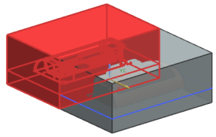
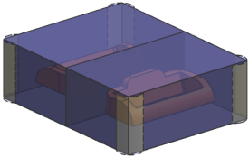

使用型腔布局命令来定义模具型腔的总数，以及它们在模具中的位置。您将创建一个双型腔布局，型腔背对背放置。
点击注塑模向导工具条上的型腔布局 。
布局组件将变为工作部件。
在型腔布局对话框的布局类型组中，从列表中选择矩形。
选择平衡。
从指定矢量列表中选择 XC 轴 。
在平衡布局设置组的型腔数列表中，选择2。
在生成布局组中，点击开始布局 。
在编辑布局组中，点击自动对准中心 。

在编辑布局组中，点击编辑插入腔 。
在插入腔体对话框的目录选项卡中，从 R(半径)列表中选择15。
选择第2种类型的拐角，如插入腔体对话框中的插图所示。
点击确定。
在型腔布局对话框中，点击关闭。

选择文件→全部保存。